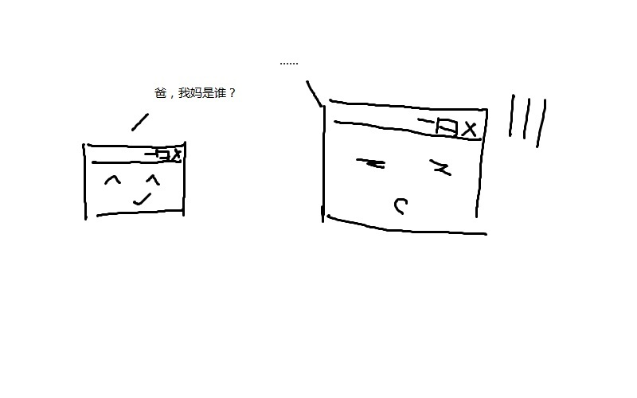

Your browser doesn't support the features required by impress.js, so you are presented with a simplified version of this presentation.
For the best experience please use the latest Chrome, Safari or Firefox browser.
郭冬升
2014年09月19日
* 对编程语言和写代码的一点理解
* 问题回答
* 网站背后的那些事
1.编程语言和写代码
* 编程语言是啥？
* 高级编程语言的“发展”
* OOP为啥这么火？
* 编程语言“方法论”
* 写代码
1)编程语言是啥
本质是命令： 用来让计算机干活的东东（命令式编程）
只有左脑：写代码前理清逻辑
2)高级编程语言的“发展”
发展 是人类调教计算机的过程
编程语言是一种让程序员越来越爽的东西
从某方面去看
编程语言越来越偏向人类
3)OOP为啥这么火？
OO是一种世界观——一切都是对象！
软件用来解决现实问题—OO更合适
4)编程范式——编程语言“方法论”
未来编程方法
函数式编程
代表：Lisp
python、JS、Ruby对函数式编程支持性也非常好
"同样功能的程序，极端情况下，Lisp代码的长度可能是C代码的二十分之一"——《黑客与画家》
5)写代码
* 理解计算机如何工作（特别C/C++）
* 学会编程语言语法规则
* 了解编译器工作方式
2.问题回答
* 对于编程，你们最初是如何入门和学习的
* 如何养成良好的编程习惯，比如变量、函数的命名，程序的书写格式，错误的调试方法等
* 团队成员如何协作完成一个项目，比如如何高效的讨论并做出决策
* 在使用新软件的时候是学会再用还是边学边用
3.网站背后的那点事
* 网站如何工作？
* 制作网站的规则
* 后台语言干啥用的？
* 云？
1)网站如何工作
实质：开放一个目录给网络上所有用户
如何找到你？
域名或IP地址

2)规则的产生
开始时浏览器对文件解析规则并不相同
于是W3C成立并制定一系列推荐规格
规则的核心：HTML、CSS
大部分情况下
* HTML决定内容
* CSS决定样式
* JS处理动作，修改DOM
3)后台语言的作用
* HTML文件的动态修改/产生
* 请求处理
* 数据操作
!总结
4)云

Thank You!